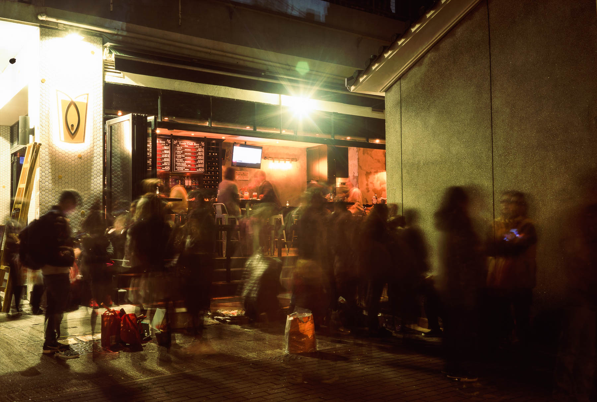

每年農曆正月廿六，是觀音開庫的日子，在香港不同地區供奉觀音的廟宇也會舉辦觀音借庫，大部分也是在年廿五夜晚十一點開始，這一晚各廟宇都大排長龍。不論是打工仔或老闆的信眾，他們相信觀音借庫可以旺財，打開未來一年的「水路」。
去年的年廿五晚上，我在屋企附近的大埔舊墟天后宮拍攝了觀音開庫的情況。天后宮的背面是一間吃 Fish & Chips 的酒吧，相映成趣。

在天后宮旁的水月宮，是供奉觀音的地方，大量信眾過十一點後便開始進入水月宮。年頭借過庫後，無論你財運亨通與否，記得年尾要回到廟宇還庫！
今年年廿六是下星期三2月22日，大部份廟宇也會在早一晚21日的十一點開庫，如果不想排隊迫人，可以在22日白天到廟宇。
至於那裏那一個廟宇可以借庫，借庫流程等等，可以參考 Timable 的整理。最後祝各位鷄年財運滾滾來！